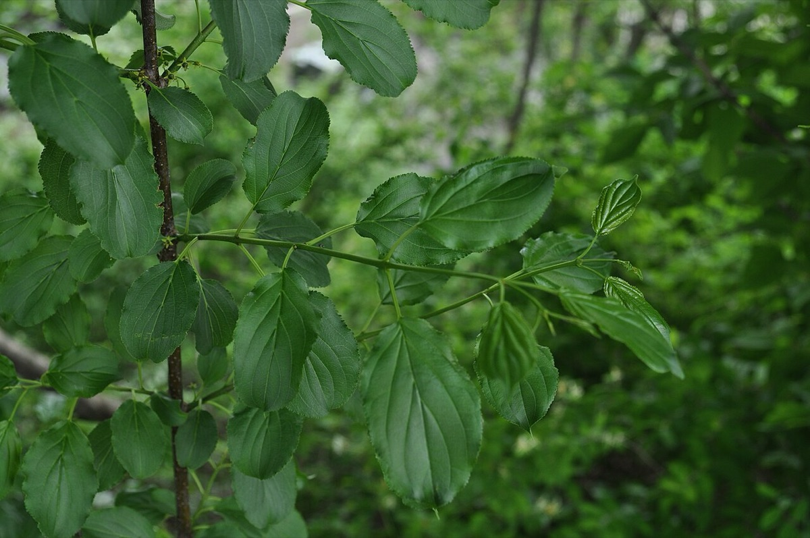
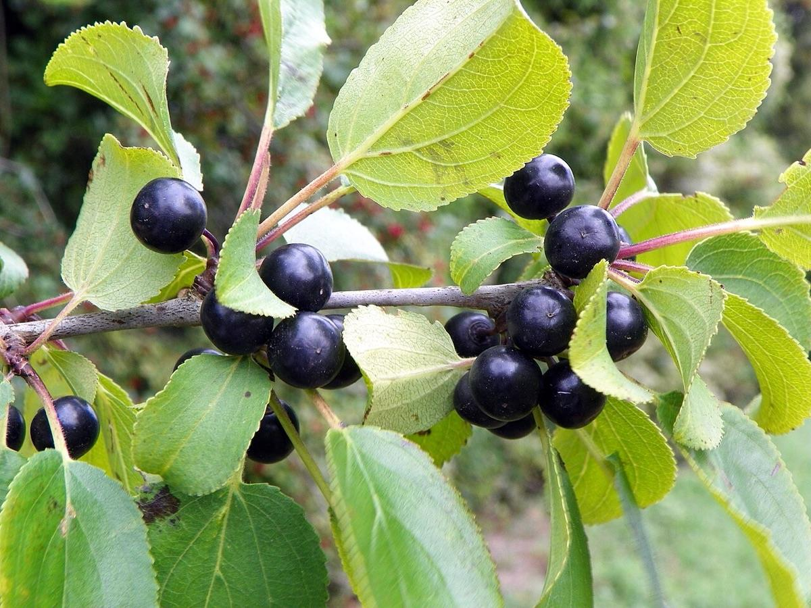

Buckthorns
Rhamnus cathartica (common buckthorn), Frangula alnus (glossy buckthorn)
Two non-native buckthorns are invasive in Vermont and are managed together: common buckthorn (Rhamnus cathartica) and glossy buckthorn (Frangula alnus).
- Also called
- Common buckthorn, European buckthorn, Glossy buckthorn
- Kind
- shrub · Rhamnaceae
- Legal status
- Tier 3 on the Agency of Agriculture quarantine list (both common and glossy buckthorn); the VTinvasives pages call both Quarantined: Class B Noxious Weed (checked 2026-10-30)
- Look-alikes
- Common chokecherry (Prunus virginiana); Native alder-leaved buckthorn (Rhamnus alnifolia)
Pictures


Names
Common buckthorn is also called European buckthorn. Glossy buckthorn can reach about 30 feet as a large shrub or small tree.
Range
Present in Vermont forests, edges and fields; glossy buckthorn is especially aggressive in wet areas. County distribution is not recorded here.
How to identify (by season; look-alikes and the key difference)
- Both: leaf out early in spring and keep their leaves late into fall, so they stand out from native shrubs in April and in late October and November.
- Common buckthorn: leaves subopposite (sometimes alternate or opposite), oval, 1.5 to 3 inches long, with 3 to 4 pairs of veins that curve toward the tip; dark gray bark; orange inner bark where cut; twigs usually tipped with a sharp spine; plants are male or female.
- Glossy buckthorn: dark green, shiny, simple leaves, mostly alternate, with prominent veins; gray-brown bark with white lenticels; no thorns are described on the page.
- Look-alike: common chokecherry has droopy clusters of flowers and fruit, and its leaf veins do not run parallel toward the leaf tip the way common buckthorn's do. The native alder-leaved buckthorn is a native alternative named on the common buckthorn page.
- The glossy buckthorn page includes a photo comparing the two leaves but no written differences. Use the species pages for identification: VTinvasives' summary gallery page was seen to have mismatched labels.
Through the year
Dates are typical for Vermont and shift with elevation and year; "approximate" means the source gave a season and the dates are a translation of it.
| When | What | Look for | What to do | Dates |
|---|---|---|---|---|
| Apr 1 to May 15 | leaf-out (identify) | Green leaves while the native shrubs around them are still bare; both buckthorns leaf out early. | - | approximate |
| Apr 15 to Jun 30 | survey (control) | The window before fruit ripens, when treatment works best. | Cut or treat before seed; prioritize fruiting plants; expect follow-up for at least a few years (the common buckthorn page says 5) because of the seed bank. | approximate |
| May 1 to Sep 30 | flower (identify) | Glossy buckthorn: small pale greenish-yellow flowers in the leaf axils, May through September. Common buckthorn: yellow-green, four-petaled flowers in clusters of 2 to 6, in spring. | - | stated |
| Jul 1 to Sep 30 | fruit (identify) | Glossy buckthorn fruit ripens from red to dark purple or black from about July; common buckthorn berries are small, black, about 1/4 inch, ripening August to September. | Treat before seed set where you can; bag and dispose of fruit when feasible. | stated |
| Oct 20 to Nov 30 | leaf-drop (identify) | Still holding leaves into late fall after the native shrubs have dropped theirs; the easiest time to find and map them. | - | approximate |
| Dec 1 to Mar 31 | dormant (identify) | Common buckthorn: dark gray bark, twigs usually ending in a sharp spine, orange inner bark where cut. Glossy buckthorn: gray-brown bark with white lenticels. Dark berries may still hang on. | - | approximate |
Habitat and spread
Forests, forest edges, meadows, fields and disturbed areas; glossy buckthorn also wet areas. Spread is by seed (birds and mammals eat the berries; glossy fruit floats for over two weeks, so water carries seed), and by sprouting from roots and stumps after cutting or burning. Common buckthorn matures at 5 to 6 years and seeds heavily; seed viability is given as at least 2 years on one line of the page and 2 to 6 years on another.
Damage
Dense thickets crowd out native shrubs and understory plants and shade out regeneration. The long growing season (early leaf-out, late leaf retention) is an advantage over natives. Common buckthorn raises soil nitrogen, which can change which natives grow there. Glossy buckthorn casts dense shade in wet areas and shows species-specific allelopathy. The berries of common buckthorn contain emodin, a natural laxative, so animals cannot digest the sugars but still spread seed.
What helps it spread (not something to encourage)
This is an invasive species, so nothing here is advice to encourage it. What the sources read say about where it grows and how it spreads is in the sections above; what they say about stopping it is under Control. The Vermont Landowner's Guide, chapter 17 (corrective strategies for invasive species), covers general methods for invasive plants and pests.
Control (by method, timing, follow-up, what not to do)
- Goal first: eradication or containment, as for other quarantined plants. Single methods usually are not enough; use an integrated plan.
- Timing: treatments work best before plants set seed. The pages give no months. Prioritize fruiting plants, since seed is the main route of spread. Expect follow-up for at least a few years (the common buckthorn page says at least 5) because of the seed bank. Foresters increasingly speak of control rather than eradication: keeping populations low enough to hand-pull seedlings.
- Mechanical: pulling or digging disturbs soil and can trigger germination from the seed bank; any root or stump left behind resprouts vigorously. The common buckthorn page says removed plants are best left on site so the roots can dry out.
- Chemical: do not apply while plants are flowering; cutting first to delay flowering and then applying the lowest effective volume is suggested. Follow the label; applicator certification may be required. Wetland use needs a special permit; no application within 200 feet of a Public Water Source Protection Area unless the Water Supply Division is notified; organic-certified land and its neighbors may have restrictions.
- Biocontrol: none known for either species.
- Disposal: if fruit is present, bag and dispose of it where feasible; other disposal is not stated.
- Plan reporting: if enrolled in Use Value Appraisal, a plan lists invasives by stand (see Shrub Honeysuckles for how the plan reports them).
Legal status
Both species are Tier 3 on the Agency of Agriculture quarantine list (broadly established; local management meaningful where natives would otherwise be displaced) and are called Class B Noxious Weeds on the VTinvasives pages. The Agency does not manage established plants; that rests with landowners. Confirm the rule text before moving or selling plants or soil containing them.
Sources
- Vermont Agency of Agriculture, quarantine list: https://agriculture.vermont.gov/node/11701 (read 2026-10-30)
- Vermont Invasives, Buckthorn, Common: https://www.vtinvasives.org/invasive/buckthorn-common (read 2026-10-30, no update date shown)
- Vermont Invasives, Buckthorn, Glossy: https://vtinvasives.org/invasive/buckthorn-glossy (read 2026-10-30, no update date shown)
- Vermont Invasives search summaries (not read in full): "Spotlight: Common Buckthorn"; Management Case Studies; "To Control Invasive Species, Some Towns Release The Sheep"
What this page is based on
Kind of source: mixed (status from the Agency of Agriculture page; identification and control from the VTinvasives species pages; a few timing cues from search summaries)
What was read: The Agency of Agriculture quarantine page and the VTinvasives species pages for common and for glossy buckthorn, read through summarizing fetches on 2026-10-30. The pages give no months for treatment and no last-updated date. The glossy page shows a leaf comparison photo but no written differences between the two species. The 'winter' calendar entry and the control window are translations of seasons from search summaries of VTinvasives pages, not read from the pages. The 2019 fact sheet and management case studies were not read.
Last checked: 2026-10-30
Vermont Woodland Owner's Reference, built 2026-11-09. Rules and dates here are summaries, not legal advice; dates shift with elevation and year. Photo and recording credits · The text is by Loop Works, CC BY 4.0 (pictures and recordings keep their own licenses) · Note: _reference/US-VT/Invasives/Buckthorns.md